2021 Burç Yorumları ve Genel Durum
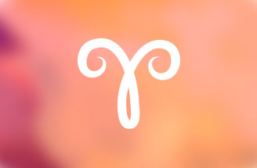
♈KOÇ:
Bu yıl koçlar için iş ve sosyal çevrenin gelişim göstereceği bir yıl olacak.
Bu alanlarda konumlarında ve statülerinde değişim gözlemlenebilir.
Ayrıca hayattan alacakları derslerin önemi büyük olacaktır.
Disiplinli olmaları kendilerine fayda sağlayacaktır.
Yılın başında iyi bir görünümde olsalar da ocak ve şubat aylarında dikkatli olmak zorundalar.
Özellikle iş ve çevre açısından zorlayıcı açılara sahipler. Bu yıl ekonomiye bağlı bir çevresel
gelişim ile zor bir iletişim süreci yaşayabilirler. Yaz ve sonbahar aylarında ise gündemleri değişmeye başlayacaktır.
Mayıs ve ağustos ayları arasında iç dünyaları daha rahat ve huzurlu olabilir. Eğitim, seyahat ve yeni tanışacakları
insanlar ile yeni fırsatlar yakalayabilirler. Problemlerine ait bakış açılarında daha farklı yollar izlemek durumunda kalabilirler.
Kendilerini doğru ifade edebilmelerine ve ikili ilişkilerindeki dengeye özen göstermeleri yerinde olacaktır. Ortaklıklar ve evlilik
hayatlarına ilişkin konuları fazla zorlamamaları gerekiyor. Aşk ve iş konusundaki şartlar değişime uğrayabilir.
Koçlar bu yıl daha şanslı olacakları bir dönem yaşayabilirler fakat akılcı davranmaları oldukça önemli olacaktır.
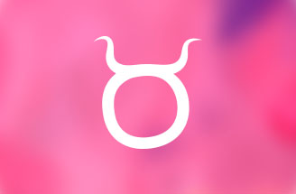
♉BOĞA
Boğa burçları hayatlarındaki değişimin başladığını hissedecekleri yıldalar ve kariyerleri için yeni yollar keşfedebilirler.
Fakat fazla açılmamaları sabırlı ve tedbirli olmaları da yerinde olacaktır.
Bu yıl aynı zamanda yılın en aktif burcu olarak oldukça zorlayıcı bir süreçten geçebilirler.
Beklenmedik pek çok gelişme boğaları farklı konularda değişikliklere zorlayabilir.
Yıl içinde sırasıyla her konuda testten geçerek büyük bir kurgusal dönemi tamamlayabilirler.
Bununla birlikte yaz aylarında daha rahat ve pozitif olabileceklerdir.
Yıl ortasında ise çevrelerine ilişkin konularda daha başarılı olabilirler.
İlkbaharda iş sonbaharda ise sağlık ve çalışma performanslarına dikkat etmeleri gerekmektedir.
Bu yıl sürpriz gelişmelere, hukuksal olaylara ve spiritüel gelişimlere de açık bir yıl olarak görünmektedir.
Duygusal yaşamlarını bu kaotik yılda zorlamamaları gerekir. Dönüşümlerine fırsat vermeli ve kendilerini daha iyi anlamaları gerekiyor.
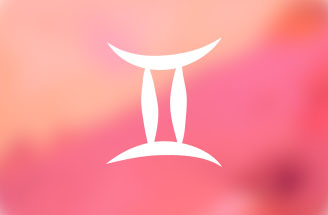
♊İKİZLER
Bu yıl ikizler burcu için pek çok alanda kontrollerinde olmayacak bir kurgusal süreçten bahsedebiliriz.
Sürpriz gelişmelere bu yıl hazırlıklı olmalılar.
İç dünyalarındaki değişim ve yeni bakış açılarının yanında daha fırtınalı duygu durumları da yaratabilir.
Bu yıl gökyüzü mayıs ayında onlar için pozitif görünüm verirken haziran ayına dikkat etmeliler
ve karışıklıklara hazırlıklı olmalılar. Yıl içinde özellikle kariyer ve eğitim alanında şanslı olabilirler.
Yolculuklarla başlayan kurguların içindeki fırsatları değerlendirebilirler.
Sonbaharda iç dünyalarına ilkbaharda ise ikili ilişkilerine ve evlilik hayatlarına özen göstermeleri gerekebilir.
Ocak ve şubat aylarında psikolojik durumları ile daha dengeli bir hayat yolu izlemeleri yerinde olacaktır.
Sonbahar aylarında aşk hayatlarındaki hareketlenmeye ve aksaklıklara da takılmamaları gerekmektedir.
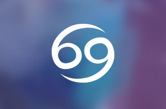
♋YENGEÇ
Yengeç burçları için evlilik ve ruhsal gelişimleri açısından pek çok önemli gelişmenin bir arada yaşanacağı bir yıl olacak.
Kendi döngülerindeki olay gelişimlerine bu yıl biraz daha dikkat etmeleri gerekebilir.
Bu yıl zorlu süreçler daha çok yaz aylarında gelişebilir.
Evliliklerine ve paylaşım alanlarına dikkat etmelerinde fayda var.
Oldukça gergin olabilirler. Mayıs ayında ise şanslı bir döneme sahip olacaklar.
Seyahat, eğitim ve yenilik içeren durumların olumlu yanlarını görebilirler ve ağustos ayına kadar fırsatları değerlendirebilirler.
Bu yılın sonbahar aylarında kendi ailevi etkileşimleri öne çıkıyor.
Kış döneminde ise şanslı ve gelişime açık bir döngünün içinde olacaklarını söyleyebilirim.
Psikolojik açıdan rahat olmaları ve karar aşamalarında kendilerini zorlamamaları doğru olacaktır.
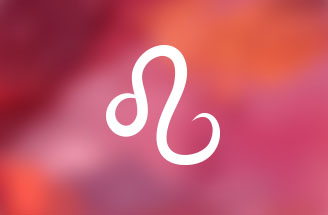
♌ASLAN
Bu yıl aslanlar kariyerlerinde farklı yönleri denemek isteyebilirler ve yeni yollar karşılarına çıkabilir.
Bu değişim onlara gayet iyi gelecektir. Ayrıca sosyal çevrelerinde de hızlı bir değişim süreci yaşanabilir.
Yaz ayları bu yıl için şanslı olabilir fakat sonbaharda özellikle iletişim konusuna dikkat etmeleri gerekecektir.
Problem çözümlemede zorlanabilirler fakat bu durumu büyütmemeleri gerekmektedir.
Aile ve çevre ilişkilerinde fazla zorlayıcı davranmamaları daha iyi sonuçlar verebilir.
İç dünyalarına yönelik olumlu gelişmeler uzun zamandır bekledikleri hisleri kendilerine yaşatabilir.
Bu yılın son aylarında aşk ve talihlerindeki olumlu görünümde onları desteklemeye devam edecektir.
Ocak ve şubat aylarında ikili ilişkilerine ve bedensel sağlıklarına karşı daha tedbirli olmaları gerekiyor.
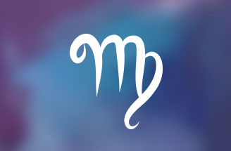
♍BAŞAK
Başak burçları hayatlarının dengeli kalmasına emek harcamalı, çalışma koşulları ve sağlık açısından ise dikkatli olmaları gerekiyor.
Bu açılardan yoğun bir yıl olacak diyebilirim. Ayrıca hayata bakış açıları,
seyahatler ve hayatlarına girecek yeni insanlar açısından son derece değişken bir yıldalar diyebiliriz.
Ağustos ve eylül aylarında karışıklıklar çokça olabilir bu döneme dikkat etmelerinde fayda var.
Yılın ilk aylarında ise şanslarına pek güvenmemeleri ve sağlıklarına oldukça dikkat etmeleri yerinde olacaktır.
Mayıs ve ağustos ayları arasında ikili ilişkiler, ortaklıklar ve paylaşılan konular açısından daha verimli olacak ve
gerçekleri görebilecekleri bir dönem yaşayacaklardır.
Kariyerleri açısından ise bu yıl pek kolay olmayabilir fakat öğrenecekleri çok şey olacak diyebiliriz.
Yılın son aylarında ise ailevi konulardaki destekleyici konumlar başakların rahatlamasını sağlayacaktır.
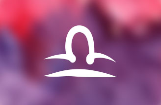
♎TERAZİ
Bu yıl terazi burçlarının duygusal yaşamlarına dair olaylar daha hızlı gelişmeye başlayabilir.
Bir taraftan şanslılar bir taraftan da dikkatli olmaları gerekmektedir.
Kendilerini kimi noktalar da durdurmaları gerekebilir ve bazı olayları da sabırla karşılaya bilmelilerdir.
Bununla birlikte iç dünyalarında ve spiritüel alanda pek çok gelişme yaşayabilirler.
Ocak ve şubat aylarında ailevi konularda ve aşk hayatlarında zorlanabilirler.
Dengelerini korumak için daha çok çaba sarf etmek zorunda kalabilirler.
Mayıs ve ağustos ayları arasında sağlık ve çalışma performansı açısından oldukça şanslı olacaklar.
Bu zamanı iyi değerlendirmeleri önemli olacaktır. Bu yıl eğitim ve seyahat açısından ise fazla bir beklenti
içinde olmamaları daha iyi görünmektedir. Yılın son aylarında iletişim ve problem çözme becerilerinde artış olacak diyebilirim.
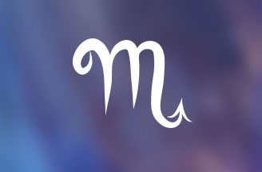
♏AKREP
Akrep burçlarının evliliklerine dair koşullar geçen yıl değişmeye başlamıştı.
Bu yıl ailevi meselelerde baskı altında kalabilirler ve evliliklerinde daha sert süreçlerden geçebilirler
fakat bir taraftan da şanslarının yardım edeceği gelişmeleri de yaşayabilirler. Özellikle sonbahar ve kış dönemlerindeki
tutumlarına önem vermeleri gerekebilir. Ocak ve şubat aylarında yine bahsetmiş olduğum ailevi etkilere daha çok dikkat etmeliler.
Mayıs ve ağustos ayları arasında ise aşk hayatları renkli geçebilir ve daha şanslı bir dönem geçirebilirler.
İçsel dünyalarına psikolojik hallerine ve yasal durumlara karşı daha duyarlı olmaları faydalı olacaktır.
Aynı zamanda bu yılın son aylarında iş yaşamlarındaki gelişmelerde daha destekleyici bir konumda olabilecektir.
Akrep burçları kendi kurgularındaki dönüşüm sürecini bilinçli ve kontrollü yaşamaya bakmalılar.
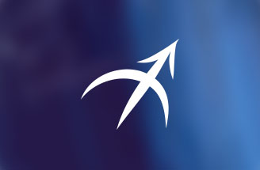
♐YAY
Bu yıl iletişim ve hayat ritmleri açısından yüksek tempolu bir sene olacak yay burçları için.
Sağlık açısından kendilerine daha çok önem vermeleri gerekebilir. Bu sene sonbahar ve kış aylarında önemli gelişmeler yaşayabilirler.
Davranışlardaki denge ve yaşam koşulları bakımından stres bu yıl daha zarar verici bir konuma sahip olabilir.
Yıl içinde farklı dönemlerde şanslı anları ve fırsatları olacaktır onları değerlendirmeleri bu yılın verimli geçmesini sağlayabilir.
2021 yılının sonunda kişisel planda beklenen gelişmeleri tetikleyici durumlar harekete geçebilir.
Bununla birlikte yaylar özellikle evlilik, ikili ilişkiler, ortaklıklar ve ticaret alanında zor testlerden geçebilirler.
Bunun yanında sonbaharda ise arkadaş çevresine dikkat etmesi gerekiyor.
2021 yılının kurgusu içinde faydalı pek çok alan olsa da yay burçları verecekleri sınavlara da dikkat etmeleri gerecektir.
Ocak ve şubat aylarında iş yaşamlarında daha mücadeleci olmaları gerekebilir.
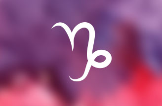
♑OĞLAK
Oğlak burçları maddi kaynaklarında ve bu noktada yapmış oldukları yatırımlarda pek çok hareketlenme yaşayabilirler.
Fakat yılın başında bu konulara dikkat etmeli ve maddi kayıp yaratacak konulardan uzak kalabilmelidir.
Mayıs ve ağustos ayları arasında iletişim ve problemlerin çözümü açısından oldukça verimli geçebilir.
2020 yılının yoğun etkileşiminden kurtuluyorlar ama özellikle sert açılara maruz kalmaya devam etmeleri onları yormaya devam edebilir.
Mayıs ve haziran aylarında sağlıklarına, stres seviyelerine ve çalışma tempolarına önem vermemeliler ve kendilerini bu noktalarda
zorla mamalılardır. Sonbahar da aşk konusunda dikkatli olmalıları gerekir. Şanslılarına güvenmeleri onları zarara uğratabilir.
2021 yılının sonunda ise daha dengeli bir iç dünyaya kavuşabilirler diyebilirim.
♒KOVA
Bu yıl kova burcunun şanslı yılı bu yüzden pek çok konuda gelişme ve ilerleme sağlayabilirler.
Bununla birlikte çalışma azimleri ve gayretleri de bu konuda belirleyici olacaktır.
Ayrıca bu yılın en aktif burcu konumunda pek çok olay yaşayabilirler.
Hayatlarındaki dönüşümlerin yaşanacağı önemli bir yılda diyebiliriz.
Yılın büyük bir bölümünde sert açıların görünümünde kalabilirler fakat büyük gelişmelerle birlikte hayatlarındaki önemli
ve olumlu gelişmeleri bu döngü içinde de bulabilirler. Şansları tüm koşullara pozitif etkileşim getirebilir.
Ocak ve şubat ayları en çok dikkat etmeleri gereken aylar olacaktır. Bu zorlayıcı dönemlerde denge her şeyin rolünü belirleyebilir.
Sonbaharda eğitim ve seyahat konularında daha hassas olmaları gerekmektedir.
Yılın son aylarında kariyer ve çevre açısından asıl istedikleri durumu yakalamaları mümkün olabilir.
Her açıdan iyi okunması gereken bir yıl diyebiliriz kovalar için.
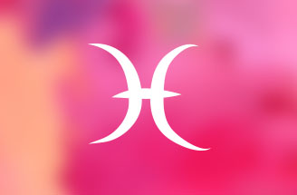
♓BALIK
Balıklar 2021 de hayatlarındaki içsel enerjiyi daha yukarıya taşıyabilirler.
Değişimlere ayak uydurmalı ve direnmemeleri faydalı olacaktır.
Şanslı olacakları dönemlerde pek çok alanda ilerleme sağlayabilirler.
Bahar ve yaz aylarında şanları daha iyi olacaktır.
Özellikle bu yıl için mayıs ve ağustos ayları arasında fırsat ve olanakları iyi kullanmaları yerinde olur.
Bu yıl burç olarak aktif bir konumdalar. Sonbahar ve kış aylarına biraz daha dikkat etmeliler.
Doğru insanlar ve doğru ifadeler ile yasal konular ve sürpriz gelişmeler oldukça önemli bir kurgusal dönemi işaret ediyor.
2021 yılının son döneminde kariyer olarak daha başarılı olmaları da mümkün gözükmektedir.
Ocak ve şubat aylarında ruhsal durumlarına dikkat etmeli huzursuzluklarını dengelemeli lerdir.
Ailevi konular bu yıl ilkbahar döneminde yükselişe geçerek birkaç ayı sorunlu bir şekilde yansıtabilecektir.
Aşk hayatlarında ise yine yaz ve sonbahar dönemi hareketli olacaktır.